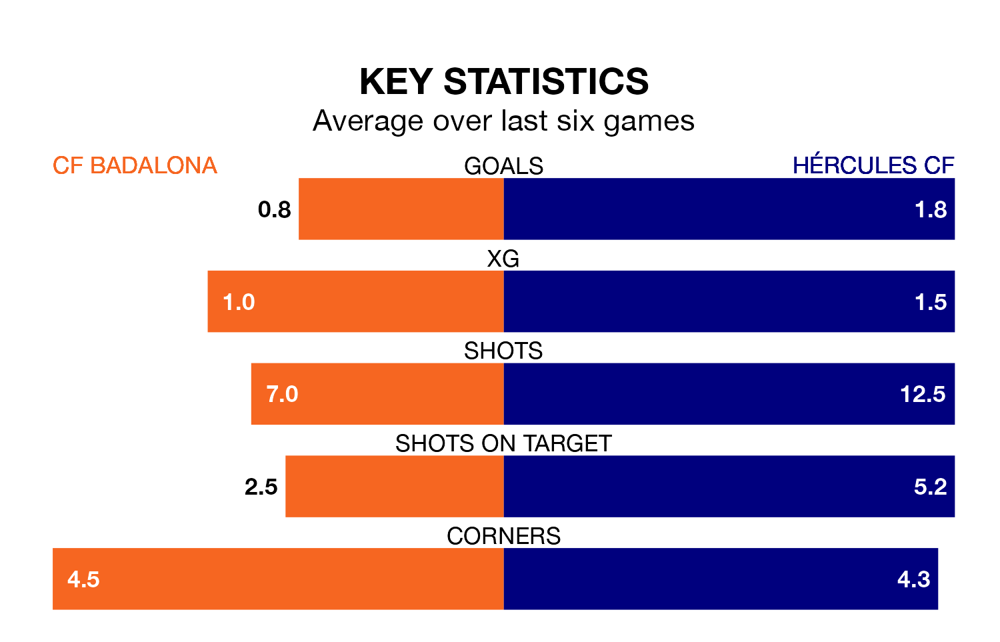

CF Badalona host Hércules CF in Sunday's early match at Estadi Municipal de Badalona looking to bounce back from defeat last time out in the Segunda División RFEF Group 3.
Badalona, who sit fourth in the league after 32 games, fell to a 2-1 away defeat to CE Europa on April 21.
They face a Hércules side who picked up a win in their last match, a 5-1 victory against Peña Deportiva, and who sit first in the table.
With 49 goals in 32 games so far this season, Hércules are the league's third-highest scorers with 1.5 goals per game. And they are conceding fewer than average, letting in 28 goals at a rate of 0.9 per game.
Badalona, meanwhile, are average scorers, with 1.2 goals per game. They have conceded 0.7 goals per game.
In the last 10 years, Badalona and Hércules have played each other on 16 occasions. They won four each, and they drew eight times.
On average, Badalona scored 0.9 goals and Hércules 0.8 in those matches.
Their last meeting was on December 17, when they played out a 2-2 draw.
The hosts are in bad form in the Segunda División RFEF Group 3, with one win and a draw from their last six games.
With four wins and two draws over that period, the away side's form is much better – they have taken 14 points from 18, compared to Badalona's four.
Updated: 07:59 (UTC), 26/04/24